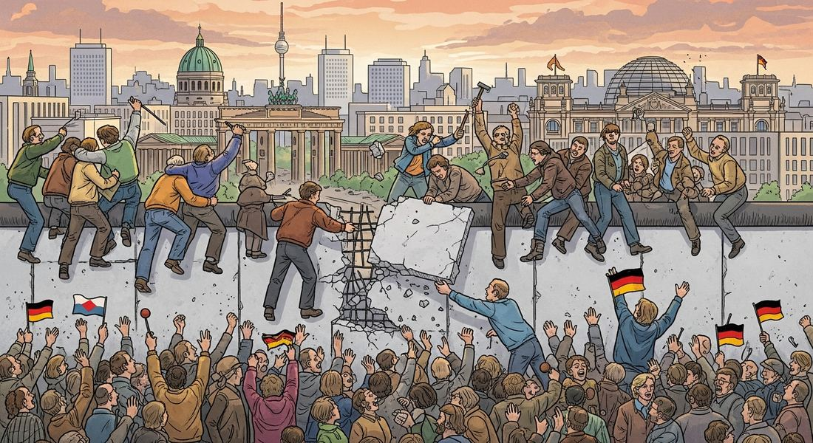

8.8 End of the Cold War
- LO-A: Three CED-specified causes of the Cold War's end — know all three — (1) US military and technological advances; (2) Soviet's costly failed invasion of Afghanistan; (3) public discontent and economic weakness in communist countries. The CED bundles these as KC-6.2.IV.E — you need all three for full credit on the exam. The Soviet invasion of Afghanistan (1979–89) was the USSR's Vietnam — Just as the US was drained by Vietnam, the USSR was drained by Afghanistan — 10 years, massive casualties, enormous cost, no victory, and a demoralized military. It exposed Soviet weakness to the world and contributed to Gorbachev's reform agenda. Gorbachev's reforms were meant to save the USSR — they ended it — Glasnost (openness) and perestroika (restructuring) were intended to revitalize Soviet communism. Instead, glasnost allowed public criticism that couldn't be contained, and perestroika exposed how dysfunctional the Soviet economy was. The reforms unleashed forces that destroyed the system they were meant to save. The Fall of the Berlin Wall (1989) and collapse of the USSR (1991) ended 45 years of Cold War — The Wall's fall symbolized communism's collapse in Eastern Europe. The USSR itself dissolved in December 1991 — 15 new independent states emerged. The Cold War ended not with war but with the peaceful implosion of one side.
Try each question before revealing the answer.
1. Why did the Soviet invasion of Afghanistan (1979–89) prove so costly and ultimately contribute to the end of the Cold War?
2. How could Gorbachev's reforms (glasnost and perestroika) — intended to strengthen the Soviet system — end up destroying it?
3. The CED identifies "public discontent and economic weakness in communist countries" as a cause of the Cold War's end. How were these two factors connected?
- Explain the causes of the end of the Cold War — US military and technological advances; Soviet Union's costly failed invasion of Afghanistan; public discontent and economic weakness in communist countries — leading to the collapse of the Soviet Union
Tap a term for its definition.
-
Definition: Reagan administration's strategy of providing military and financial support to anti-communist insurgencies worldwide, including in Afghanistan, Nicaragua, and Angola. Significance: Part of the intensified US military and technological pressure that the CED identifies as contributing to the Cold War's end.
-
Definition: Reagan's 1983 proposal for a space-based missile defense system that could intercept Soviet nuclear missiles. Significance: Alarmed Soviet leaders who feared the US was trying to create a first-strike capability; the prospect of competing with this technology strained the Soviet economy and contributed to Gorbachev's reform decisions.
-
Definition: Soviet military intervention to support a communist government in Afghanistan against Islamic mujahideen resistance; after 10 years and massive losses, the Soviets withdrew in defeat. Significance: CED-required cause of the Cold War's end; exposed Soviet military limits, drained resources, demoralized Soviet society — the USSR's equivalent of America's Vietnam.
-
Definition: Last leader of the Soviet Union (1985–1991); introduced glasnost (openness) and perestroika (restructuring) to reform the Soviet system; his reforms accelerated the USSR's collapse. Significance: His willingness to allow Eastern European countries to reform without Soviet military intervention was the key decision that enabled the peaceful fall of communist governments in 1989.
-
Definition: Gorbachev's policy of "openness" — allowing greater freedom of press, speech, and political discussion; intended to expose and fix systemic problems. Significance: Released decades of suppressed criticism that couldn't be controlled once unleashed, contributing to the legitimacy crisis of Soviet communism.
-
Definition: Gorbachev's policy of "restructuring" the Soviet economy — introducing limited market elements and reducing central planning. Significance: Exposed the inefficiencies of the planned economy without providing a functional alternative, contributing to economic chaos in the late Soviet period.
-
Definition: On November 9, 1989, East Germany announced that citizens could freely cross the Berlin Wall; crowds demolished it. Significance: The most iconic symbol of the Cold War's end; within months, communist governments across Eastern Europe had fallen peacefully ("Velvet Revolutions").
-
Definition: On December 25, 1991, Gorbachev resigned and the Soviet Union formally dissolved into 15 independent states, including Russia, Ukraine, Kazakhstan, and the Baltic states. Significance: Ended the Cold War and the bipolar world order that had structured international relations since 1945; created an unprecedented period of US unipolar dominance.
🌍 How Did the Cold War End?
The Cold War ended in a way almost no one predicted: not with a bang — a nuclear exchange, a direct military confrontation — but with the quiet implosion of one side. The Soviet Union simply ceased to exist on December 25, 1991, when Gorbachev resigned and the red flag over the Kremlin was lowered for the last time. Fifteen new independent republics emerged from the ruins of the world's largest communist state.
The AP CED identifies three interconnected causes: (1) "Advances in U.S. military and technological development," (2) "the Soviet Union's costly and ultimately failed invasion of Afghanistan," and (3) "public discontent and economic weakness in communist countries." All three are required for the exam. They worked together — each reinforcing the others — to overwhelm the Soviet system's ability to sustain itself.

Image credit not specified.
AI-generated illustration (Google Gemini, 2025), commercially licensed.
🚀 US Military and Technological Advances — KC-6.2.IV.E
By the early 1980s, the US military was going through a significant modernization under President Ronald Reagan. The Reagan administration dramatically increased defense spending — from $300 billion to $500+ billion annually — investing in new weapons systems, advanced electronics, and military technology. This spending created a technological and military challenge that the Soviet economy, already strained by the arms race, struggled to match.
The most alarming development for the Soviets was Reagan's proposed Strategic Defense Initiative (SDI), announced in 1983 — popularly called "Star Wars." SDI proposed developing space-based laser and missile defense systems that could destroy Soviet nuclear missiles before they reached American soil. Whether SDI was technically feasible or not, it posed a terrifying prospect from the Soviet perspective: if the US could build an effective missile shield, it could launch nuclear weapons first and not fear Soviet retaliation. Soviet leaders were convinced (incorrectly) that the US had the technology to actually build such a system, and they knew they couldn't match it economically. The prospect of this technological leap drove Soviet leaders to reconsider whether they could sustain the arms race at all.
Additionally, the Reagan Doctrine provided military and financial support to anti-communist insurgencies worldwide — most significantly to the Afghan mujahideen — raising the cost of Soviet military commitments globally. US economic pressure also played a role: coordinating with Saudi Arabia to keep oil prices low hurt the Soviet economy, which depended heavily on oil export revenues.
🏔️ The Soviet-Afghan War: The USSR's Vietnam — KC-6.2.IV.E
In December 1979, Soviet troops invaded Afghanistan to support a faltering communist government facing a growing Islamic insurgency. Soviet leaders expected a quick stabilization operation — they got a 10-year quagmire that drained resources, demoralized society, and exposed the limits of Soviet military power.
The mujahideen resistance — deeply motivated by religion and Afghan nationalism, supported by US weapons and Pakistani logistics — proved impossible to defeat. Soviet tactics (burning crops, destroying villages, millions of landmines) created a humanitarian catastrophe and millions of refugees but couldn't suppress the insurgency. An estimated 15,000 Soviet soldiers died; hundreds of thousands of Afghans died; millions more fled as refugees. The war cost an estimated $50 billion that the Soviet economy could ill afford.
Most importantly, the war broke the myth of Soviet military invincibility. The army that had defeated Nazi Germany couldn't defeat Afghan tribesmen. When Soviet veterans returned home — physically and psychologically damaged — their honest accounts of the war's futility contradicted the state's propaganda. Gorbachev, who came to power in 1985, recognized the war as a catastrophic mistake and arranged the Soviet withdrawal by 1989.
📉 Economic Weakness and Public Discontent — KC-6.2.IV.E
While US pressure and Afghan defeat were important, the Cold War's end was ultimately driven from within the communist world by economic failure and popular loss of faith in the system.
By the 1980s, Soviet-bloc economies were in serious trouble. The planned economy had worked reasonably well in the 1950s–60s for building heavy industry, but it was structurally incapable of producing the consumer goods, technological innovation, and quality of life improvements that citizens increasingly expected. Shelves in Soviet stores were regularly empty. Consumer electronics — televisions, refrigerators, cars — were inferior to Western products and often unavailable. Environmental degradation (particularly stark after the Chernobyl nuclear disaster of 1986, a catastrophic failure of a Soviet-designed reactor that released radiation across Europe) demonstrated the human cost of the planned economy's priorities.
Citizens in communist countries could see — through Western radio broadcasts, contacts with tourists, and smuggled consumer goods — that the capitalist West was delivering higher living standards. The gap between communist promises (workers' paradise, inevitable socialist victory over capitalism) and communist reality (shortages, corruption, surveillance, environmental disaster) was becoming impossible to maintain.
In Poland, the Solidarity trade union movement (founded 1980) — the first legal independent trade union in a communist country — grew from economic grievances into a massive political opposition movement with 10 million members. In Hungary, reformers within the Communist Party began dismantling border controls. In East Germany, citizens voted with their feet — hundreds of thousands fled to the West through Hungary when that border opened in 1989.
🧱 Gorbachev, Glasnost, and the Collapse
Mikhail Gorbachev became Soviet leader in 1985 and quickly recognized that the system needed fundamental reform. His two key policies — glasnost (openness) and perestroika (restructuring) — were intended to revitalize Soviet communism by exposing and fixing its problems. Instead, they unintentionally accelerated its collapse.
Glasnost allowed unprecedented public criticism of the Soviet system — newspapers reported on corruption, Chernobyl's true scope, the Afghan war's costs, and the crimes of Stalin. This transparency, intended to mobilize public support for reform, instead revealed how dysfunctional and dishonest the system had been. Once public criticism was permitted, it couldn't be controlled: people questioned not just specific policies but the legitimacy of communist rule itself.
Most critically, Gorbachev announced that the USSR would no longer intervene militarily in Eastern Europe to maintain communist governments — reversing the Brezhnev Doctrine that had justified Soviet invasions of Hungary (1956) and Czechoslovakia (1968). Without the Soviet military threat, Eastern European communist governments had no credible basis for maintaining power against popular opposition. In 1989, communist governments fell one after another in the "Velvet Revolutions" — peaceful transitions in Poland, Hungary, Czechoslovakia, Bulgaria, and Romania (Romania alone saw violence). The Berlin Wall fell on November 9, 1989 — the most iconic image of the Cold War's end.
The collapse of Eastern European communism accelerated demands for independence within the Soviet Union itself — particularly from Baltic republics (Estonia, Latvia, Lithuania) and later Ukraine and other republics. Gorbachev tried to negotiate a new union treaty, but hardliners staged a coup attempt in August 1991 (which failed). The failed coup accelerated the dissolution: republic after republic declared independence. On December 25, 1991, Gorbachev resigned and the Soviet Union formally ceased to exist.
Nothing added yet. To attach a Google NotebookLM audio overview, video overview, or infographic to this topic: open this file — build/data/content/ap-world-history/8-8.json — and add an entry to notebookLmResources with a title and a shareable link (or paste an embed <iframe> directly into this block in the generated HTML file if you're editing the page by hand instead).
- The USSR was destroyed by US military action rather than internal weakness
- The Cold War ended primarily because Soviet military power could not sustain the level of global commitments the USSR had undertaken, draining resources and morale needed to maintain the system domestically
- Islamic extremism was the primary force that ended communist rule in the Soviet Union
- The Afghan War caused the Soviet economy to collapse overnight, immediately ending the Cold War
- Glasnost allowed US propaganda to be broadcast directly into Soviet households, turning public opinion against communism
- Glasnost was implemented too slowly to address the USSR's problems before public discontent had already reached a crisis point
- Glasnost encouraged economic reforms that disrupted central planning without creating effective markets, causing immediate economic collapse
- By permitting public expression after decades of suppression, glasnost released critiques that challenged not just specific policies but the entire legitimacy of communist rule, creating a crisis of legitimacy the system couldn't survive
- The direct result of US military pressure on East Germany that forced the wall's demolition
- The completion of German reunification, which had been negotiated secretly between the US and USSR for decades
- The moment when the most visible physical symbol of Cold War division — a wall built to keep people from fleeing communism — was dismantled by popular demand, demonstrating that communist governments could no longer maintain themselves without Soviet military support
- The failure of Soviet economic policy, which could no longer maintain the cost of the wall's operation
- The growth of the Solidarity trade union movement in Poland, which grew from economic grievances into a 10-million member political opposition that the communist government ultimately could not suppress
- The Reagan administration's military spending increase, which forced the Soviet Union to match US expenditures
- The Chernobyl nuclear disaster, which demonstrated Soviet technological inferiority to the United States
- The Soviet withdrawal from Afghanistan, which freed resources that could have been used to address economic problems
- The United States and Russia immediately formed a military alliance to address common security threats
- The United Nations took over administration of former Soviet territories to ensure peaceful transition to independence
- The Warsaw Pact was replaced by a new Eastern European military alliance excluding Russia
- Fifteen new independent states emerged from the former Soviet Union, ending the bipolar Cold War world order and creating a period of US unipolar dominance
📝 My Notes (edit this yourself — no AI needed)
This box is yours. Open this page's HTML file directly (in GitHub's editor or any text editor), find the <!-- MY-NOTES-START --> comment below, and type between the markers — corrections, extra context for this year's students, a link, anything. Changes show up as soon as you save and re-publish the file — nothing else on the page will change.
(Add your own notes, corrections, or extra context here.)